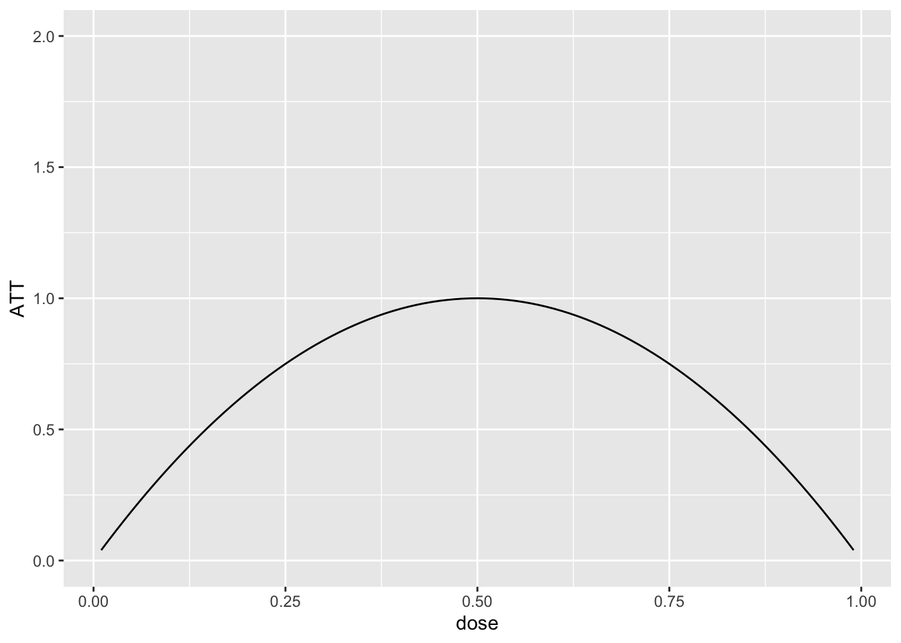
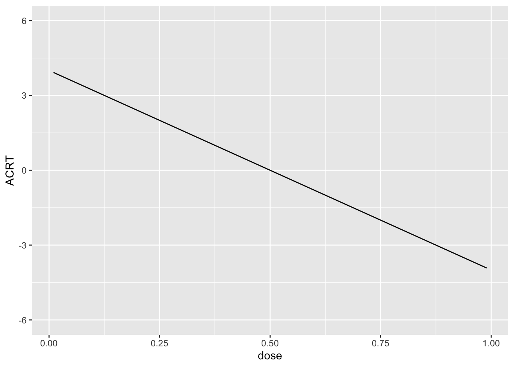

devtools::install_github("shommazumder/binscatteR")Exercise 2a
For this problem, we are going to use a difference-in-differences identification strategy to estimate the causal effect of a continuous treatment. The data that I am providing below is simulated data, but it has broadly similar features to the data used in the application in Callaway, Goodman-Bacon, and Sant’Anna (2023) which comes from Acemoglu and Finkelstein (2008) which considers the effect of a Medicare policy in the 1980s that reduced reimbursement rates to hospitals specifically for labor expenditures. The outcome variable is the capital-labor ratio, and (roughly) the theoretical argument in their paper is that the policy could alter the capital/labor mix in hospitals, and that these effects could vary across hospitals that had differential exposure to the policy (where exposure is based on the fraction of Medicare patients in the period before the policy was implemented).
Here is information about installing and loading packages that could be useful in this problem.
library(ggplot2)
library(binscatteR)
library(np)Additional Code
I should mention that code for DID with a continuous treatment is not nearly as well developed as some of the other cases that we have considered previously. Therefore, I’m directly providing some functions that you may find useful below. The first function computes weights from a TWFE regression with a continuous treatment (these are the same weights that we talked about in our session today).
#' @param l a particular value of the treatment for which to compute weights
#' @param D an nx1 vector containing doses for all units
cont_twfe_weights <- function(l, D) {
wt <- ( ( mean(D[D>=l]) - mean(D) ) * mean(1*(D>=l)) ) / var(D)
wt
}The second function provides a way to nonparametrically estimate causal effect parameters with a continuous treatment.
#' nonparametric estimates of att(d|d) and acrt(d|d)
#' @param dy the change in the outcome over time
#' @param dose the amount of the treatment
#' @return list(
#' local_effects - data frame containing the dose and estimates of
#' att(dose) and acrt(dose)
#' att.overall - an estimate of the overall att
#' acrt.overall - an estimate of the overall acrt
#' )
cont_did <- function(dy, dose) {
# choose bandwidth
bw <- np::npregbw(formula=dy ~ dose,
regtype="ll",
bws=1.06,
bwscaling=TRUE,
bandwidth.compute=FALSE)
# estimate att and acrt nonparametrically
out <- np::npreg(bws=bw, gradients=TRUE, exdat=dose)
# order from smallest to largest dose and drop untreated
this_order <- order(dose)
dose <- dose[this_order]
dy <- dy[this_order]
att.d <- out$mean[this_order]
acrt.d <- out$grad[,1][this_order]
att.d <- att.d[dose>0]
acrt.d <- acrt.d[dose>0]
att.overall <- mean(att.d)
acrt.overall <- mean(acrt.d)
return(list(local_effects=data.frame(dose=dose[dose>0],
att.d=att.d,
acrt.d=acrt.d),
att.overall=att.overall,
acrt.overall=acrt.overall))
}Data and Data Generating Process
You can load the data by running
load("medicare1.RData")It contains the following columns:
hospital_id- the hospital identifierd_capital_labor_ratio- the change in the capital labor ratio for a hospital from 1983 to 1985, this is the (change in the) outcome variablemedicare_share_1983- the fraction of medicare patients in the hospital in 1983, this is the continuous treatment variable.
Here are the first few rows of the data
head(medicare1) hospital_id d_capital_labor_ratio medicare_share_1983
1 1 1.0801008 0.6575648
2 2 0.7099469 0.3040419
3 3 0.8776760 0.6135562
4 4 0.9431500 0.4825248
5 5 0.6435963 0.7852173
6 6 0.9563133 0.4610489Remember this is simulated data, so we can also go ahead and get a sense of what the answers to the questions below “ought” to be (we will see how well various approaches can deliver them below.)
To start with, I generated the data where \(ATT(d|d)\) is given as in the following plot:
dose <- seq(.01,.99,by=.01)
ATT <- -4*(dose-.5)^2 + 1
p <- ggplot(data.frame(ATT=ATT, dose=dose), aes(x=dose, y=ATT)) +
geom_line() + ylim(c(0,2))
p
And this implies that \(ACRT(d|d)\) is as is given in the following plot:
ACRT <- -8*(dose-.5)
ggplot(data.frame(ACRT=ACRT, dose=dose), aes(x=dose, y=ACRT)) +
geom_line() + ylim(c(-6,6))
I drew the data so that there is a 10% chance of a hospital being untreated and then, among treated hospitals, I drew the dose from a normal distribution with mean 0.5 and standard deviation of 0.16. Since this is symmetric about 0.5, it implies that \(ACRT^O=0\) by construction. We will see how well we can replicate this using different approaches below.
Question 1
Plot a histogram of the the dose. What do you make of this?
Question 2
Make a binscatter plot of the change in the outcome over time with respect to the dose. What do you make of this?
Question 3
Run a regression of the change in the outcome over time on the dose. What do you make of the results?
Question 4
Use the cont_did function provided above to estimate the \(ATT(d|d)\), \(ACRT(d|d)\), \(ATT\), and \(ACRT^O\). Plot \(ATT(d|d)\) and \(ACRT(d|d)\) as functions of the dose and provide estimates of \(ATT\) and \(ACRT^O\).
Question 5
The following plot provide an estimate of the density of the dose. How is this plot related to the estimate of \(ACRT^O\) from Question 4?
Question 6
Use the function cont_twfe_weights provided above to create a plot of the TWFE weights as a function of the dose. How is this plot related to the result from Question 3?